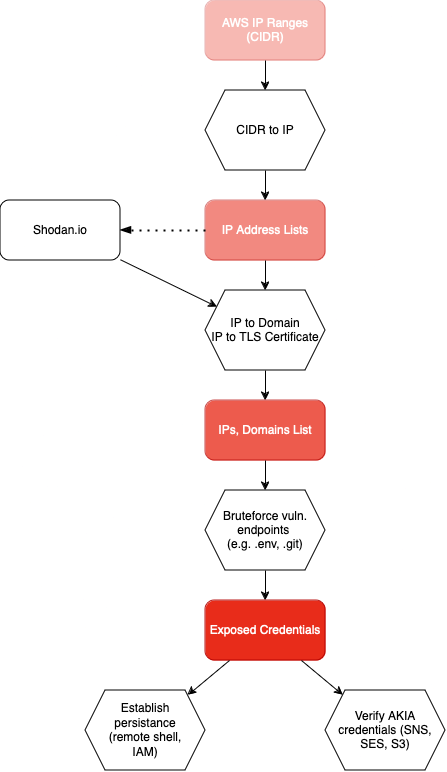

Shiny Nemesis
TL;DR
We have identified a significant operation that scanned millions of websites exploiting vulnerabilities in improperly configured public sites. This incident resulted in the exposure of sensitive Keys and Secrets, granting unauthorized access to customer data.
A sophisticated and extensive infrastructure, orchestrated by threat actors from a French speaking country, conducted comprehensive scans of the internet, searching for exploitable vulnerable endpoints. These vulnerable endpoints gave the attackers access to infrastructure credentials, proprietary source code, application databases, and in some cases even credentials to additional external services.
Our investigation has identified names and contact information of some of the individuals behind this incident, which may assist in further actions against the perpetrators, which are selling their loot in dedicated Telegram channels for hundreds of Euros per breach. While the group conducts its business under a different name, " Nemesis ", we were also able to connect some of the activity to now defunct attack group "Shiny Hunters".
This report provides an in-depth analysis of the operation, detailing the Tactics, Techniques and Procedures employed by the attackers. We have collaborated with AWS Fraud team on a customer notification to implement measures aimed at mitigating the impact of this breach. While we have identified some of the victims of this operation, they are not included in this report for privacy reasons.
It is important to note that the improper configurations allowing this attack are on the customer side of the shared responsibility model and could occur on any CSP.
Some Statistics
| IP addresses scanned | 26,798,669 |
| Sites scanned for AWS credentials | 479,711 |
| Unique valid customer credentials for AWS | (at least) 1,526 until August |
| Size of data in the exposed stash | 2 Terabytes |
| Accessible private buckets with the exposed keys | 8,244 |
| Exposed git repositories | 252,466 |
The Discovery
Hunting for malicious actors across the internet, Researchers Noam Rotem and Ran Locar have identified the infrastructure of a vast operation harvesting data from thousands of companies and organizations using AWS as their cloud provider. The discovery provided a glimpse into the operations of a large scale web scanning operation, the code used by the operators, and even the potential identities of the people behind it.
Data harvested from the victims was stored on an S3 bucket, which was left open due to a misconfiguration by its owner. The S3 bucket was being used as a "shared drive" between the attack group members, based on the source code of the tools used by them..
The Infrastructure
Once the location of the data was identified with over 2 Terabytes of data, we began to analyze its content in order to understand the scope and volume of the operation. During our investigation we found not only the code and software tools used to run the operation, but also some of the stolen data itself, containing thousands of keys and secrets, in addition to files containing lists of tens of thousands of vulnerable targets all over the world with all the needed information in order to access their data or use their resources for other purposes.
The attackers deployed various scripting languages such as bash, python, php, and nodeJS, as well as open source tools by "project discovery" (ffuf, httpx) and cracked versions of attack tools like "MultiGrabber".
Analysis
Our analysis is based on code analysis of the tools discovered in the bucket, log files produced by the attackers' operation and results files generated by the tools.
The operation was split into 2 parts: Discovery and Exploitation. In the first part, a series of scripts were used to scan vast ranges of IPs belonging to AWS, looking for known application vulnerabilities as well as blatant mistakes.
- The attackers obtained lists of AWS IP address ranges. These are publicly available - provided by Amazon - and consists of long lists of CIDRs per AWS region.
- Using open-source tools the attackers expanded the CIDRs into long lists of IP addresses.
- Shodan, an IT search engine, was used to perform 'reverse lookup' on the IP addresses. One of the utilities in the attackers codebase contained logic and API keys to access Shodan and perform "reverse lookup" on the hosts, i.e. get the domain names associated with each IP address that exists within the AWS ranges. This allowed the attackers to extend their attack surface to domain names, as well as IP addresses
- Trying to further extend the domains list, the SSL certificate served by each IP was analyzed to extract the domain names associated with it. This gave the attackers a much richer set of data to work with.
After determining the targets, the actual scanning process began, calling each IP and discovered domain on ports 80 (unencrypted HTTP) and 443 (Encrypted HTTP) dozens of times, first to find exposed generic endpoints such as environment files (.env), configuration files, exposed git repositories (.git), etc, and then to categorize the system (Laravel, Wordpress, YII, etc.). Once a system was categorized, a special set of tests was performed on it in order to attempt to extract database access information, keys, passwords, and more from product specific endpoints.
A set of classes (written mostly in python) exist for each type of endpoint, customized to extract the relevant information. for example Laravel, a popular PHP framework, has a few known endpoints that divulge sensitive information. The scanners utilized by the operators include special code to identify and harvest the exposed information.
In some cases, the scanners are not satisfied with just reading exposed information, but using known exploits to install remote shells like "EmperorsTools" which allows for a much deeper penetration.
The information the scanners are looking for varies, and contain among other things:
- AWS Customer Keys and Secrets
- Database credentials
- Git credentials and source code
- SMTP credentials (for sending emails)
- Twillio keys (for SMS)
- CPanel credentials
- Vonage (Nexmo) keys (for SMS )
- SSH credentials
- Cryptopay (cryptocurrency management platform) keys and mnemonics
- Sendgrid credentials (For Emails)
- BitcoinD (bitcoin node) credentials
- Binance (crypto trading platform) credentials
- Google account credentials
- Facebook credentials
- CoinPayment (crypto trading) public and private keys
- Exotel (customer experience platform) Keys
- OneSignal (push notification) credentials
- ToxBox (Vonage video API) credentials
- Plivo (SMS) credentials
- and others.
Each set of credentials was tested and verified in order to determine if it's live or not, and written to output files to be exploited at a later stage of the operation.
Interestingly, the attackers were not checking for keys to AI services. This could either mean the tools they are using predate the AI Boom, or that the AI services are of lesser interest for them because they lack the ability to monetize them.
Based on the attackers tools and logs, when exposed AWS customer credentials were found and verified, the attackers tried to check for privileges on key AWS services:
- IAM- "Identity and Access Management" - this is the first service checked by the attackers. Keys with IAM privileges can be exploited to create additional administrator users, which is the equivalent of establishing persistence on the AWS account even if the owner changed the original keys.
- SES- "Simple Email Service" - Amazon's cloud-based e-mail service provider.Once SES access was detected, the key was used to check the "Max24HourSend" quota which indicates how many emails can be sent using this keypair. These limits were included in the "product listing" later used to determine the value and price of the access keys. We found logs from the operation and analysis revealed they point to an adult webcam website with a vast affiliate program, which may hint to the operators involvement with affiliate spam. Another possibility is that they later used SES to send phishing emails.
- SNS- "Simple Notification Service", an AWS managed service that provides asynchronous message delivery from publishers to subscribers; it is often used to push notifications to consumers but can also be used to send emails. The attackers followed a similar path, checking the monthly quota of messages ("MonthlySpendLimit" in USD) in order to use it to send their messages later.
- S3- "Simple Storage Service" - cloud object storage solution, often used to store sensitive data , backups of various databases, and more. Keys with access to S3 are particularly valuable because allow the attackers to check for sensitive customer data to steal, or use the S3 bucket for their own operation

Diagram 1. - Shiny Nemesis Attack Flow
Attribution
There are other tools used by the operators, which appears to be the same tools, written by the same authors, as those used by the " Shiny Hunters " hacking group, who allegedly breached AT&T Wireless, Microsoft, Ticketmaster, and others. The tools, documented in French and signed by " Se zyo Kaizen ", the name used by Sebastien Raoult who was arrested, extradited to the US, and pleaded guilty in January of 2024.
We also recovered a signature used by the operator of a darknet market called " Nemesis Blackmarket ", which focuses on selling stolen access credentials and accounts used for spam. These included phone numbers embedded into the code, and other identifying information.
Mitigation
of this requestWe originally discovered the operation in August of 2024, and reported it to the Israeli Cyber Directorate in early September. Due to the low number of Israeli victims, no actions were taken.
On September 26th we sent the report to AWS Security, since most of the victims targeted by the attack were AWS customers, and they began to take immediate actions to mitigate the impact and alert the affected customers of the risk.
The AWS Security team emphasized that this operation does not present a security concern to A WS, rather, it is on the customer side of the shared responsibility model, a statement that we 100 % agree with. The efforts made by the attackers exploited mistakes on the application level, which AWS has no control over. No AWS infrastructure was breached or exploited to get the customer data, only the individual customer applications managed by them.
Finally, on November 9th, 2024, the AWS security team confirmed they completed handling this issue, and that the report can be published.
How to protect yourself from similar attacks
There are dozens of other, similar operations, running against services all over the internet. Attackers are running mass sweeps, looking for the weakest targets, the lowest hanging fruit. There's a famous saying that when running from a bear, you don't need to be the fastest runner, you just have to not be the slowest one. There are a few simple steps that anyone can take to avoid falling victim to these attacks, and that's mostly simply by following best practices.
- The first thing any system operator should do is to make sure they NEVER have hard-coded credentials in their code or even in their filesystem. AWS provides excellent services such as the " AWS Secrets Manager" to store sensitive credentials, and with proper CI/CD processes in place , there is absolutely no need to have passwords and keys in places that might be accessed by unauthorized parties.
- It is also advisable to run simple web-scans using open source tools like "dirsearch" or even "nikto", which are often used by lazy attackers to identify common vulnerabilities - that way, if something was left exposed, you have a chance at finding it before malicious actors do
- In addition, using a WAF (Web Application Firewall) is a relatively low cost solution that can filter out malicious attempts to get sensitive information.
- As a precaution against leakage of keys, passwords or other secrets, it is advisable to roll them periodically. That way even if a malicious actor has obtained access to your keys, they will be rendered useless after the roll period. ( See AWS documentation: https://docs.aws.amazon.com/kms/latest/developerguide/rotate-keys.html#rotating-kms-keys)
- CanaryTokens (https://canarytokens.org/) are tripwires for your secrets. They are easily created and can be sprinkled around your code in places nobody should access. If a canary gets triggered, it means someone is attempting to access secrets they shouldn't.
CanaryTokens can be deployed for AWS API Keys (will trigger an alert when someone tries to use a keypair), for DNS (will trigger when someone tries to resolve a server) and for many other platforms and technologies.
Of course, there is no silver bullet, and security is a process that requires continuous efforts. However, by implementing even the minimum measures mentioned above, you can avoid being the lowest hanging fruit, and getting caught in the dragnet of these operations. Attackers are often lazy and will focus on the easier targets. Unless they are incentivized to focus on a specific target, they will pick on the easiest one. As a wise man once said: when running away from a bear, you don't need to be the fastest. you just need to make sure you aren't the slowest.
Who are we
Noam Rotem and Ran Locar are members of CyberCyber Labs, a loosely organized group of security researchers who scan the web to find and report data leaks before they can be exploited. Some of our past discoveries include the personal data of everyone in Ecuador [https://www.bbc.com/news/technology-49715478], Amadeus flights system [https://www.popularmechanics.com/flight/airlines/a25923137/hacker-airline-security-flaw/], Biostar2 biometric system [https://www.bbc.com/news/technology-49418931], the US domestic drone platform [https://www.vice.com/en/article/data-shows-where-police-fly-drones-dronesense/] and many others.